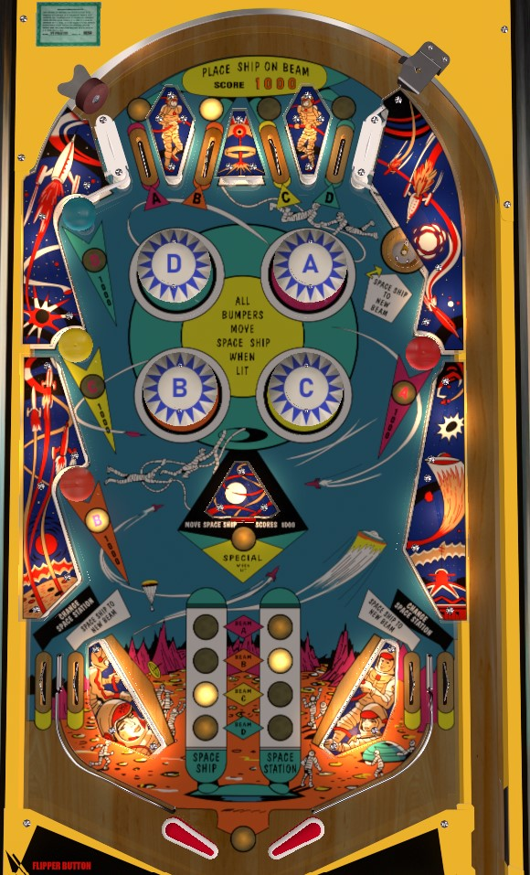

Top lanes and mushroom bumpers move the Spaceship on the backglass to the indicated row (or "beam"); the lit top lane or mushroom bumper move the Spaceship to the same beam as the Space Station. When the Spaceship and Space Station are on the same beam, hit lit pop bumpers, slingshots, or the right side wall to move the Spaceship within its beam, and avoid hitting mushroom bumpers, top lanes, in/out lanes, and the saucer so that nothing moves to a different beam. Moving the Spaceship to the Space Station lights the center target for extra ball. Extra balls are automatically kicked upward out of the drain.
The main goal of On Beam is to move the Spaceship on the backglass to the same location as the Space Station. The grid is separated into four rows, A-B-C-D, referred to as "beams", with several different horizontal positions along each beam. You must move both between beams and within beams to meet up with the Space Station. Meeting with the Space Station scores 3,000 points, lights the center standup target for Special (worth 1 extra ball), and moves the Space Station to a new location so you can do it all again.
The top lanes and mushroom bumpers always score 1,000 points. Making a top lane or hitting a mushroom bumper moves the Spaceship to the letter Beam corresponding to the specific top lane or mushroom bumper that was made, and also lights that letter's pop bumper in the center of the table. The lit top lane or mushroom bumper does not give any additional points and only serves to indicate which Beam the Space Station is currently on without needing to look at the backglass or the chart on the playfield near the flippers.
The upper right saucer and both in lanes score 500 points and move the Spaceship to a new Beam. This seems to be done pseudo-randomly (as in, I haven't found a pattern to how it works); after making a saucer or in lane, the Spaceship will always be on a different Beam than it was previously, but not always an adjacent one, and you can be moved onto the Beam where the Space Station currently is.
Out lanes score 1,000 points and move the Space Station to a new, seemingly-random location.
Pop bumpers score 1 point when not lit, or 10 points when lit. Light a pop bumper by hitting the top lane or mushroom bumper with the same letter. Lit pop bumpers move the Spaceship along its current Beam. The wall switches on the right below the A mushroom bumper, the slingshots, and the center standup target also move the Spaceship along its current Beam.
Moving the Spaceship to the Space Station's location instantly scores 3,000 points and lights the center target for Special. As far as I am aware, the only possible value for the Special is 1 extra ball. Extra balls are denoted by small purple stars on the backglass just below the D beam. Up to 5 extra balls can be stored at any one time. If you have one or more extra balls remaining, the unlabelled white insert between the tips of the flippers will be lit. If you have one or more extra balls remaining, then as soon as the ball hits the outhole, the game will fire the ball back into play upwards between the flippers and unlight one backglass star. When an extra ball is used, lit pop bumpers and the lit Special target will stay on; however, if you have no extra balls left and move to a new numbered ball in play, the pop bumpers and Special target will unlight. Draining the ball does not inherently impact the position of the Spaceship and Space Station (though if you drained down an out lane, the out lane switch will have moved the Space Station, itself).
The Spaceship and Space Station columns of lights near the slingshots serve only to indicate which Beam the Spaceship and Space Station are currently on, so that you don't have to look at the backglass every time. However, there is no way to see how far apart horizontally the Spaceship and Space Station are solely by looking at the playfield.